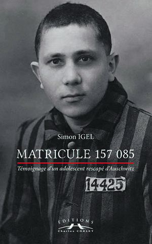

Département 71
Saône-et-Loire
13 biographies liées au département.

Enfants Hasson (S)

Enfants Kadosh

Ernest Micmacher

Gérard Marx

Jean Lévy (F)

Lotte Adler

Marcel Handzel

Margot Koppel

Max Mardochée Librati (S)
![Micheline Francfort [alias Michèle Michard] (S)](images/enfants-frankfort.jpg)
Micheline Francfort [alias Michèle Michard] (S)

René Simon Lyon

Rosa Kaufmann
